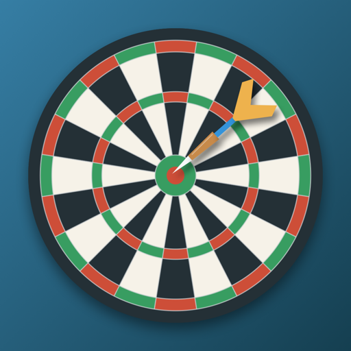

Oche Up! tient les scores de 501, Cricket, Killer, Shanghai et Around the Clock. Entrez vos fléchettes du bout du doigt ou à la voix : l'app calcule, suggère les finitions et garde les statistiques.
Gratuit, sans compte, sans publicité, sans suivi.

Simple, double, triple, bull, annulation de la dernière fléchette. Deux dispositions au choix : classique ou X2 / X3. Le restant, les finitions possibles et le bust sont gérés pour vous.
Annoncez « triple vingt, dix-neuf, double douze » : les fléchettes s'inscrivent toutes seules, une à une. La reconnaissance est réglée sur le vocabulaire des fléchettes, en français et en anglais.
301 à 1001 (double in / out), Cricket (Score, No score, Cut throat), Random Cricket, Around the Clock, Shanghai court ou long, Killer à 3 ou 5 vies.
Temps de la partie et temps de jeu de chaque joueur, pause, historique des volées, correction et annulation. L'écran reste allumé pendant la partie.
Moyennes, meilleures volées, pourcentages, évolution du score, carte de chaleur par joueur. Filtrez par période, par groupe de joueurs ou par tournoi.
Regroupez vos parties dans un tournoi (une soirée, un championnat de bar…), suivez le classement et retrouvez le champion.
Partagez le compte rendu d'une partie, d'un tournoi ou de vos statistiques : classement, historique, graphiques.
Vos parties se retrouvent sur vos appareils grâce à votre iCloud. L'app est en français et en anglais.
Oche Up! n'a ni compte, ni serveur. Vos parties sont enregistrées sur votre appareil et, si vous le souhaitez, synchronisées par votre propre iCloud, auquel l'éditeur n'a pas accès. Il n'y a ni publicité ni suivi.
Lire la politique de confidentialité →